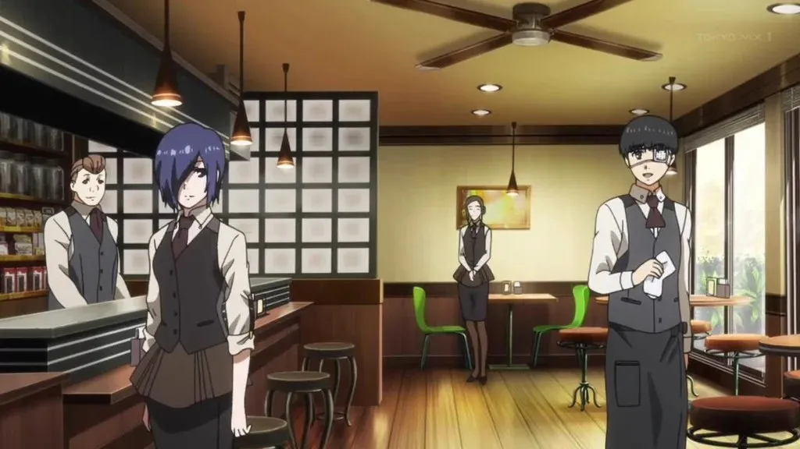

Вот то кафе, в котором я работаю!
Немного фактов обо мне:
Я - молодая девушка-гуль, работавшая официанткой в Антейку.Во время охоты носила кроличью маску, за что и получила прозвище Кролик. Отличительной чертой Тоуки является её длинная чёлка, целиком закрывающая правый глаз. После событий арки Аогири волосы становятся длиннее и теперь достигают самого низа шеи. Внешне она выглядит как обыкновенная симпатичная девушка, в которой сложно заподозрить гуля. Обычно она носит школьную форму или униформу официантки, а в свободное время предпочитает наряды в стиле «пацанки». Выходя на охоту, Тоука надевает длинный плащ, кроличью маску и розовый парик, чтобы скрыть свою настоящую личность.